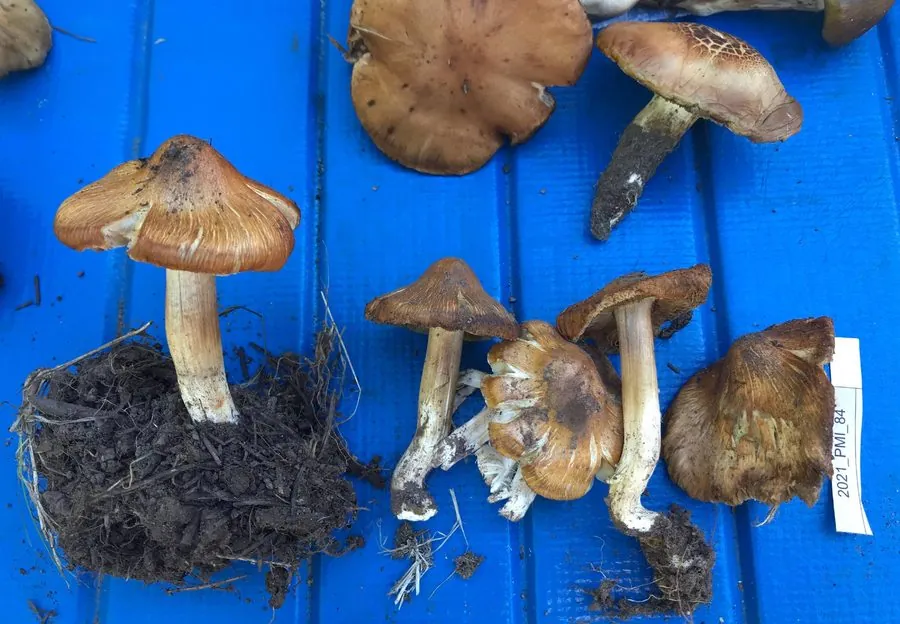

真菌 · 真菌界
黄丝盖伞 Inocybe fastigiata

丝盖伞科丝盖伞属小型伞菌，菌盖黄褐色、具放射状裂纹，含毒蕈碱，误食可致流涎、出汗、瞳孔缩小等中毒症状。
- 分类
- 门担子菌门纲伞菌纲目伞菌目科丝盖伞科属丝盖伞属
- 栖息环境
- 北半球温带林下地上，与阔叶树或针叶树形成外生菌根
- 地理分布
- 北半球温带广布，中国南北林区夏秋季常见
- 保护级别
- IUCN 暂无评估；分布广，种群稳定
物种志
黄丝盖伞的子实体小型至中型，菌盖圆锥形至钟形，后平展，直径 3–8 厘米，黄褐色至淡黄褐色，表面具放射状纤维与裂纹，中央常凸起。菌肉薄，淡黄色；菌褶弯生，初白色后变灰褐色；菌柄圆柱形，长 5–10 厘米，淡黄色，基部稍膨大。孢子印暗褐色，孢子具瘤状突起。
本种广泛分布于北半球温带，与阔叶树或针叶树形成外生菌根，夏秋季生于林下地上。它含有毒蕈碱（muscarine），误食后 15–30 分钟即可出现流涎、出汗、流泪、瞳孔缩小、腹痛与呕吐等胆碱能症状，严重时可危及生命。黄丝盖伞与一些可食的小型伞菌外形相似，是野生菌中毒的常见原因之一，绝不能凭经验采食。
形态与习性
- 菌盖圆锥形至钟形，直径 3–8 厘米
- 菌褶弯生，初白色后变灰褐色
- 菌柄圆柱形，长 5–10 厘米，淡黄色
- 孢子印暗褐色，孢子具瘤状突起
- 生境林下地上，夏秋季发生
- 毒性含毒蕈碱，误食可致流涎、瞳孔缩小
趣味知识
- 黄丝盖伞含有毒蕈碱，误食后会出现流涎、出汗、瞳孔缩小等典型症状。
- 它的菌盖有放射状裂纹，像一顶裂开的黄色小伞。
- 毒蕈碱中毒可用阿托品解毒，但必须立即就医，不可自行处理。
- 黄丝盖伞与一些可食的小型伞菌极为相似，是野生菌中毒的常见元凶。